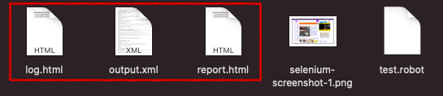
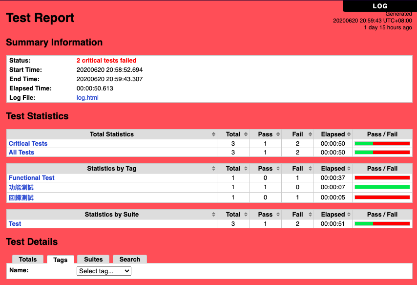
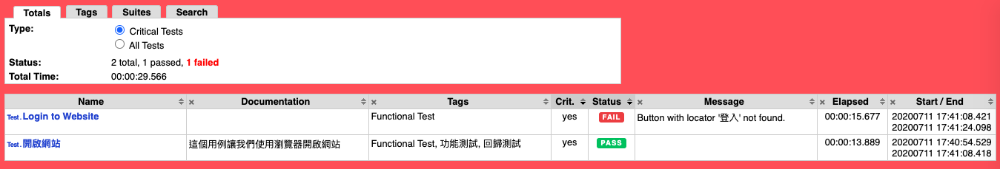
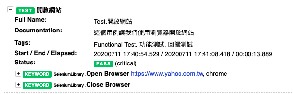

- Robot Framework 概念：
Robot Framework 測試結果報告
Robot Framework 測試結果報告是其中一個重要的優點，而且簡單易懂。如果完全了解 Robot Framework 執行檔案裡面的結構，就可以很有效的產生自己定義的測試報告。
測試執行完成之後會產生 3個檔案： log.html，output.xml，report.html
- log.html: 這個檔案只是讓 report.html 排板起來比較好看的一個檔案。
- output.html: 這個檔案涵蓋了 report.html 裡面的資訊。
- report.html: 點開這個檔案即可看到測試報告總統計結果。這個檔案整合了上述的兩個檔案之後呈現的報告結果。
測試總結顯示內容 - Test Report
※ 報告背景顏色： 如果全部的測試通過，報告背景就會呈現綠色。某一個項目失敗的時候呈現會是紅色的。
第一個區塊： Summary Information（測試執行總結）
- Status (測試狀態): 測試結果概要
- Start Time (測試開始時間): 執行測試當天開始日期與時間
- End Time (測試結束時間): 執行測試當天結束日期與時間
- Elapsed Time (執行時間): 執行測試總共花費的時間
- Log File (日誌檔案): 日誌檔案名稱
第二個區塊： Total Statistics（總統計數據）
統計數據分成三個類型：
- Total Statistics (總統計數據): 這個區塊依嚴重程度統計總共有幾個通過以及幾個失敗的測試用例。
- Statistics by Tag (依標籤統計數據): 這個區塊依標籤分類統計幾個通過以及幾個失敗的測試用例。
- Statistics by Suite (依整套測試用例統計): 這個區塊依據不同的測試檔案統計總共有幾個通過以及幾個失敗的測試用例。一個測試檔案代表一個 suite。
第三個區塊： Test Details（測試細項）
這邊可依據 Totals（全部），Tags（標籤），Suites （套件）標籤選取想要查看的細項。並且可以選 Search（搜尋）依不同的搜尋條件查看。
點選 “Test.開啟網站” 就會直接導向該測試用例日誌細節資料。
